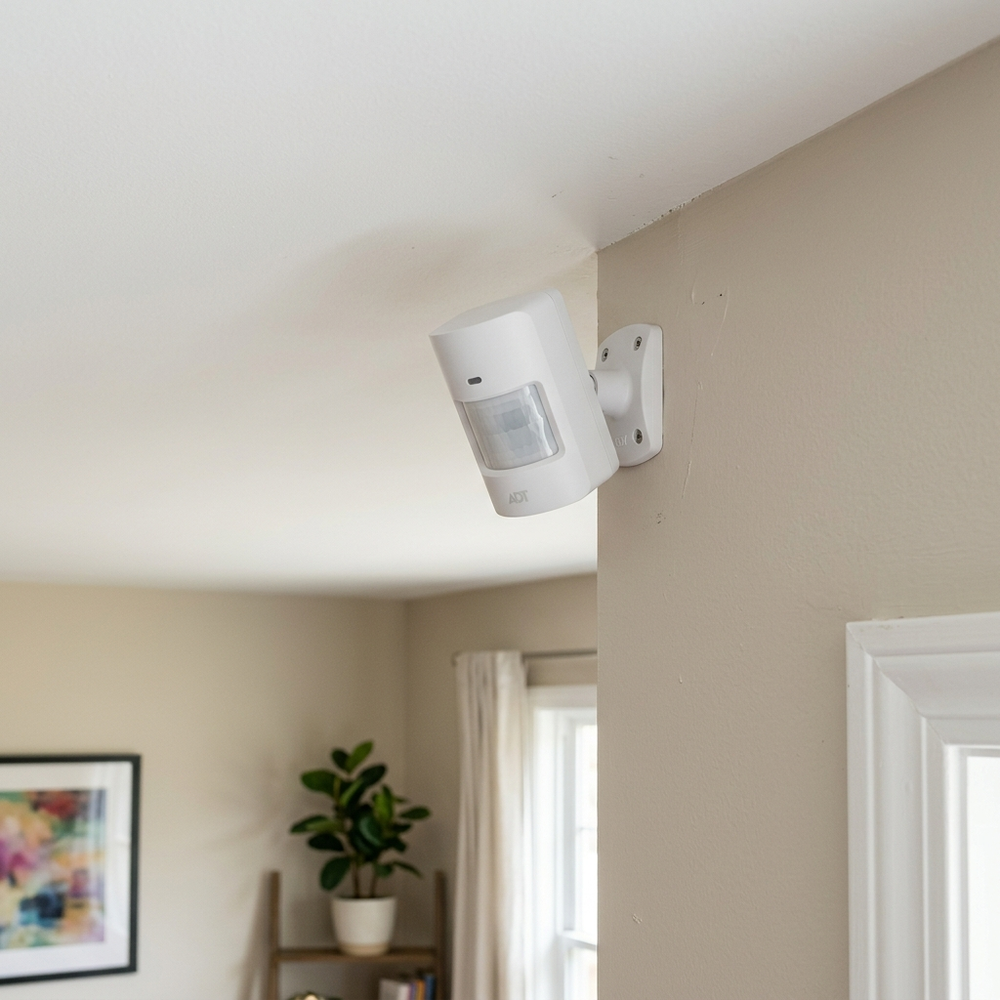
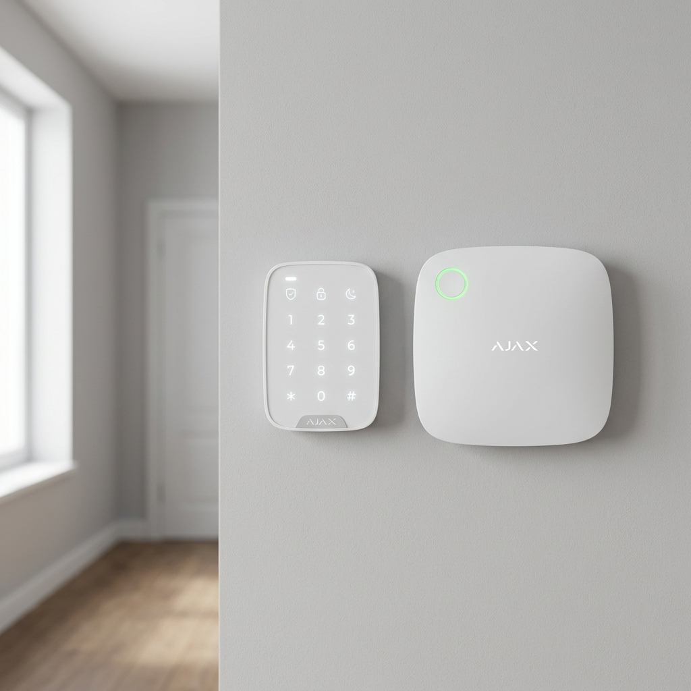

1. Why system design matters before any equipment decision
Burglars are three times more likely to target a property without an alarm. That statistic is well known. What is less understood is that a poorly designed alarm system can be almost as useless as none at all — if zones are wrong, detectors are in the wrong positions, or the response priorities are misconfigured, the system generates false alarms, gets ignored, or misses the actual breach.
The design stage is where the real work happens. Equipment is secondary. Before we specify a single panel or detector, we do a threat and vulnerability assessment of the site. We look at how the property is used, who is in it and when, what the realistic intrusion scenarios are, and what level of disruption a false alarm causes the occupants.
Only after that do we start drawing zones.
The alarm system design must fit how the property is actually used, not just how it is laid out on a floor plan. A system that generates false alarms will be switched off. A switched-off alarm protects nothing.
2. Scope of protection — how far do you go?
The first question is always: how much of the property do you protect, and to what depth?
For most homes, the answer is a layered approach. The outermost layer is the perimeter — doors, windows, and any ground-floor entry points. The inner layer is the interior — motion detection in the living spaces. Not every window and door needs a detector. What matters is covering every realistic entry route.
For a typical Singapore landed home, a common scope looks like this:
- All ground-floor doors including the main gate entry if there is a direct connection
- Ground-floor windows accessible without a ladder
- Interior motion sensors covering the living room, dining area, and staircase landing
- A panic button in the master bedroom
For apartments and condominiums, the scope is narrower because the perimeter is smaller — typically the front door, any accessible windows, and interior motion.
For commercial premises, the scope expands significantly. You are covering not just entry points but internal zones around high-value areas: server rooms, cash handling areas, storage. The system also needs to account for staff access patterns — who is legitimately in the building at what hours.
Tell your installer how the property is used day to day before they draw a single zone. A home where someone sleeps with a window open needs a different design than one that is fully sealed at night.
3. Alarm zones — the building blocks of the system
A zone is a discrete segment of the alarm system. Each detector or group of detectors in a defined area forms a zone. When a detector in that zone is triggered, the panel identifies exactly which zone was breached — which tells the monitoring centre and the police where to look.
We number zones from the outside in, front to back. Front door is Zone 1. Living room is Zone 2. And so on. The numbering should be intuitive enough that a police officer unfamiliar with the property can orient themselves from the zone report alone.
Zone types
There are three zone types and each behaves differently:
- Perimeter zones cover all the ways an intruder can enter — doors, windows, perimeter walls. Any breach triggers the alarm regardless of whether the system is on full arm or partial arm.
- Interior zones cover areas inside the property using motion sensors. Living rooms, corridors, staircases. These zones are only active when the system is on full arm — meaning everyone has left. If you arm the system with people still inside, interior zones are bypassed so occupants can move around without triggering the alarm.
- Emergency zones cover panic buttons and fire detectors. These trigger the alarm whether the system is armed or not. They cannot be bypassed.
Interior zones being bypassed on partial arm is not a weakness — it is the correct design. If a family is home at night and arms the perimeter only, they are protected against entry without trapping themselves inside an armed space.
4. Detector selection — matching the detector to the zone
Different zones need different detectors. Using the wrong detector type is one of the most common causes of persistent false alarms.
Passive Infrared (PIR)
The most common interior detector. Detects changes in heat signature as a person moves through its field of view. Effective range is typically 10 to 12 metres at 90 degrees. PIR detectors are not suitable for spaces with large temperature fluctuations — direct sunlight through a window, air-conditioning vents blowing directly at the unit, or pets moving through the zone.

Typical PIR installation for interior motion detection.
Dual-technology detectors
Combine PIR with microwave detection. Both technologies must trigger simultaneously for the alarm to activate. Significantly reduces false alarms in environments where PIR alone is unreliable — kitchens, spaces with direct sun exposure, or anywhere with temperature variation. Cost more than standard PIR but the reduction in false alarms is worth it in the right environment.
Magnetic door and window contacts
The simplest and most reliable detector type. A magnet on the door or window frame, a reed switch on the fixed frame. When they separate — door opens — the zone triggers. No technology to go wrong, no calibration needed. We use these on every door and accessible window in the perimeter zone.
Glass break detectors
Acoustic detectors tuned to the frequency of breaking glass. Useful for large glazed areas — shopfronts, floor-to-ceiling windows — where running a contact on every panel is impractical. Require careful positioning: too far from the glass and they miss the event, too close to hard surfaces and they pick up other impacts.
Match the detector to the environment, not to the price point. A cheap PIR in the wrong location will false-alarm constantly and get switched off. A dual-tech detector in that same location will work reliably for years.
5. Alarm response priorities — what happens when a zone triggers
Not all alarms get the same response. Monitoring companies and the police prioritise based on zone type.
Emergency zones — top priority
Panic buttons and fire detectors. Monitoring companies act immediately — police, ambulance, or fire services depending on the detector type. No verification call to the owner first. These are treated as life-safety events.
Perimeter zones — second priority
A door or window breach. Monitoring companies will typically attempt to verify with the owner before dispatching police, unless the account is set to immediate dispatch. The verification call takes 60 to 90 seconds. If there is no answer or the owner confirms it is not a false alarm, police are dispatched.
Interior zones — third priority
Motion detector activation inside the property. Treated as lower priority because interior triggers have a higher false-alarm rate. Most monitoring companies will call the owner twice before escalating.
These priorities are generalisations. Different monitoring companies operate differently and some offer immediate dispatch on all zones at a higher monthly fee. If your property has a high burglary risk profile — corner unit, ground floor, isolated location — pay for immediate dispatch. The 60-second verification window is enough time for a smash-and-grab to be completed.
6. Wired vs wireless — the Singapore context
Both technologies work. The choice depends on the property and the budget.
Wired systems run detection cables from each detector back to the panel. More reliable over the long term, no battery maintenance, harder to jam. The trade-off is installation disruption — cable runs through walls, under floors, around door frames. For new builds or major renovations, wired is almost always the right choice.
Wireless systems use radio frequency communication between detectors and the panel. Faster to install, no cabling disruption, and increasingly reliable with brands like AJAX using encrypted two-way communication that actively resists jamming. The trade-off is battery maintenance — detectors typically need battery replacement every 18 to 36 months depending on usage.
In Singapore's high-rise residential environment — apartments, condominiums — wireless is frequently the only practical option. Running cables through reinforced concrete walls and across common corridor areas is either impossible or prohibitively expensive. AJAX wireless systems are our standard recommendation for these environments.

AJAX wireless hub — the modern standard for non-intrusive installations.
For landed homes and commercial premises: wired if you are doing a renovation, wireless AJAX if the building is occupied and cabling is disruptive. For apartments and condominiums: wireless as the default. The technology is reliable enough that the wired-versus-wireless debate is less important than getting the zone design right.
7. What to check before you sign off on an installation
When the installation is complete, before you accept it and sign off, walk through these checks with the installer:
- Walk-test every zone — arm the system, open every door and window in sequence, trigger every motion sensor, and confirm each zone registers correctly on the panel keypad
- Confirm zone labels on the panel match the actual locations — Zone 1 should say Front Door, not Zone 1
- Test the panic button — confirm the monitoring centre receives the signal and responds within the SLA
- Confirm the entry and exit delay timings — you need enough time to arm and disarm without triggering the alarm, but not so long that an intruder has a free window
- Get the installer to demonstrate how to arm and disarm, including partial arm for nights when people are home
- Ask for the monitoring centre contact number and confirm the account is active before the installer leaves
BOTTOM LINE: A well-designed burglar alarm system is one you forget is there on normal days and trust completely on the day you need it. That means no false alarms, reliable detection, and a response chain that actually works. Get the zone design right first. The equipment is almost secondary.

Ler Wee Meng
Securevision holds Police Licence No. L/PS/000267/2023P and is registered with the Building and Construction Authority of Singapore.